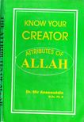

Attributes of Allah - Know your Creator.
Book by Late Dr. Mir. Aneesuddin M.Sc. Ph. D.

Download
preface: "In this work an attempt has been made to explain the Attributes of Allah through associated words and their opposites used in the Quran".
Attributes of Allah
Go to Book
Search:
Show Quran words with % at least:
Back to table
Scribd